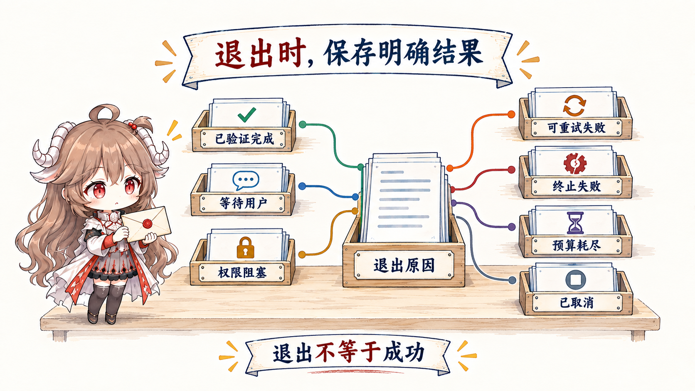
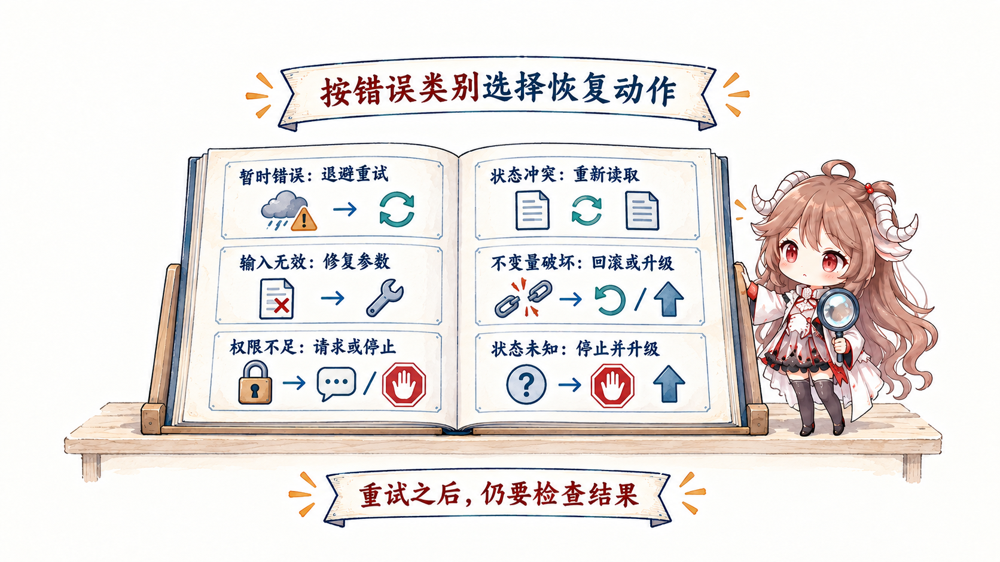

模型第一次看到任务时，不可能同时知道失败原因、正确修改和最终测试结果。它需要通过行动获得新信息，而每一条新信息都会改变下一步。
一、跟着支付测试走完四轮
- 第一轮：模型先读取失败日志，发现错误与过期订单退款有关。
- 第二轮：它读取相关函数和调用方，确认缺少一条过期状态校验。
- 第三轮：它做最小修改并运行支付测试；测试仍然失败，但返回了新的边界条件。
- 第四轮：它根据新错误调整代码，再次运行测试。目标测试和相关回归都通过，系统才允许结束。
如果没有这个往返，模型只能根据一开始的有限信息猜答案。Loop 的价值不是“多调用几次模型”，而是让每次动作带回新事实，用新事实修正下一步。
二、Loop 里到底是谁在重复什么
Agent Loop 是外层程序反复执行的一段流程：让模型决定下一步，由 Harness 执行动作，把结果交还模型，再判断继续还是停止。它不是模型在内部无限思考。
- 决定下一步：模型根据目标和当前材料，提出读取、修改、测试或结束。
- 执行动作：Harness 检查并执行工具调用，模型本身不直接启动进程。
- 得到观察：文件内容、测试输出和错误信息成为新的 observation，也就是“动作后看见的结果”。
- 继续或停止：外层程序检查任务是否完成、是否需要等待、是否已经不应继续。
最小版本只需记住三种大状态：工作中、等待外部信息、已经结束。后文的状态机，只是为了把等待原因和结束原因记录得更精确。
读完这篇，你应该能回答：为什么一次回答不够？模型、Harness 和外层控制程序各做什么？怎样判断完成、等待或失败？
资料说明：本文依据 OpenAI 对 Codex agent loop 的公开拆解、OpenAI agent 实践指南与 Anthropic 的 Building effective agents。不同 SDK 字段会变化，图中的状态名是厂商中立的教学抽象。
三、每一轮都要改变下一步判断
用普通话说，这一轮必须为下一轮带回变化：读文件得到新事实，运行测试得到新错误，修改代码得到新 diff。外层程序先整理这个结果，更新当前进度，再为模型准备下一轮材料。只有当证据、计划、风险或完成判断发生变化时，继续才有意义。
下面的表只是给刚才的动作加上工程名称：准备材料叫 Assemble，模型判断叫 Infer，执行叫 Execute，整理结果叫 Observe，决定继续或停止叫 Decide。它们不是另一套流程。
| 状态 | 输入 | 必须产出的新事实 |
|---|---|---|
| Assemble | 目标、当前状态、最近 observation | 下一次 model view 与预算 |
| Infer | model view | 受约束的提案或 final candidate |
| Execute | 已授权 tool call | typed result、artifact、环境变化 |
| Observe | 结果与环境差异 | 成功、失败、未知及 provenance |
| Decide | done criteria、风险、预算 | continue 或明确 exit reason |
四、进阶：把三种状态展开成可恢复的状态机
while (toolCalls.length) 只描述了语法条件，没有描述工程状态。至少要区分 running、waiting approval、waiting user、blocked、completed、failed、cancelled 和 budget exhausted。状态决定谁可以唤醒 run、哪些资源仍有效、outer loop 之后能否重试。
{
"run_id": "run_18",
"state": "running",
"iteration": 7,
"goal": { "id": "fix-payment-test", "done_check": "test://payment" },
"last_observation": { "kind": "test_failure", "ref": "log://9f2" },
"budgets": { "tool_calls_left": 12, "time_s_left": 480 },
"progress": { "changed_files": 2, "same_failure_count": 1 }
}while run.state == "running":
view = assemble_context(run)
proposal = model.infer(view)
observation = harness.dispatch(proposal, run)
run = transition(run, observation)
if done_check(run):
run.state = "completed"
elif repeated_without_change(run):
run.state = "blocked"
checkpoint(run)policy.ask 会把 running 变成 waiting_approval；approval_granted 再唤醒 running；只有测试 observation 满足 done check，状态才进入 completed。模型输出 final 本身不会触发完成。五、停止不只有“完成”和“没完成”
“模型返回了 final”只是一个信号，不是完整的终止协议。运行时要把它解释成多种出口：已验证完成、需要用户输入、权限阻塞、可重试错误、不可重试失败、预算耗尽、人工中止。不同出口需要不同证据和后续所有者。

| 出口 | 最低证据 | 接下来谁负责 |
|---|---|---|
| Completed | done check 通过 + artifact/diff | Evaluator 或交付流程 |
| Waiting user | 缺失决策、可选项、默认影响 | 用户 |
| Blocked | 所需 capability / permission 与当前范围 | Harness owner / 人工审批 |
| Retryable failure | 错误分类、attempt、退避条件 | 当前 loop 或 outer loop |
| Terminal failure | 不可恢复原因、在途副作用已对账、失败 artifact | Outer loop / evaluator / 人工 |
| Budget exhausted | 已完成、未完成、checkpoint | Outer loop / 人工 |
| Cancelled | 取消源、在途动作、清理状态 | Harness cleanup |
六、先写清什么证据才算做完
没有 done contract，agent 会用语言流畅度代替完成。修 bug 的 done 可能是目标测试通过、相关回归通过、diff 在范围内且没有未解释副作用；研究任务的 done 可能是覆盖指定来源、每个结论有引用、冲突被标明。完成条件应在 loop 开始前进入状态，在每次 observation 后重新评估。
模型可以建议“我认为已经完成”，但确定性检查应由 harness 执行；主观质量可以由独立 grader 或人评审。自我反思有价值，却不能既当选手又当唯一裁判。
把三个“检查”放回不同时间尺度就不会混淆：Agent Loop 看到本次测试通过后，判断“这次运行可以退出”；Outer Loop 读取测试、CI 或 review 证据，判断“这张长期任务卡可以结束”；Evals 则把许多任务重复运行，比较“这个系统版本是否稳定变好”。它们依次检查一次 run、一张 work item 和一版系统。
七、为什么不能让 Loop 无限运行
Loop 至少管理时间、model calls、tool calls、token、外部 API、并发与风险预算。仅设最大迭代数会把不同成本的动作视为相同。更好的控制器在每轮前估计下一动作的价值与成本，并为验证预留预算。
- 接近上限时缩小搜索范围、减少并行或请求人工选择，而不是突然截断。
- 为最终验证保留独立预算，防止“改完了但没钱测试”。
- 高风险写动作受独立权限门约束，不能用更多 token 换取授权。
- 预算耗尽必须生成 checkpoint 和 exit reason，不能伪装成完成。
八、失败后再试，必须改变一个条件
重试只有在输入、环境、策略或时间发生变化时才有意义。相同参数、相同错误、相同 context 的连续调用是 loop bug。把错误分成 transient、invalid input、permission、not found、conflict、invariant violation 与 unknown，才能选择正确恢复。

| 错误类 | 合理变化 | 不要做 |
|---|---|---|
| Transient | 退避、抖动、有限重试 | 立即高速重放 |
| Invalid input | 重新读取 schema、修参数 | 原参数重试 |
| Permission | 请求明确授权或换只读路径 | 绕过 gate |
| Conflict / stale | 刷新状态、重新规划 | 覆盖新事实 |
| Invariant failure | 回滚、缩小修改、升级 | 继续叠加改动 |
| Unknown | 保存 artifact、停止或隔离探测 | 无限自我解释 |
九、复盘：一次健康的运行长什么样
| 评审点 | 健康信号 | 危险信号 |
|---|---|---|
| Progress | 每轮有新证据或状态差异 | 相同调用与错误重复 |
| Done | 运行前定义、运行后验证 | 依赖 final 语气 |
| Exit | 机读 reason + checkpoint | 只有成功/失败布尔值 |
| Budget | 分项、动态、预留验证 | 只设 max iterations |
| Recovery | 按错误类型改变策略 | 任何错误都 retry |
| Human | 在决策与 authority 边界介入 | 每步审批或永不介入 |
Agent loop 负责让一次 run 有证据地收敛。下一篇把视角拉长：当任务需要多次 run、定时触发、队列选工和失败接力时，如何设计 outer loop。